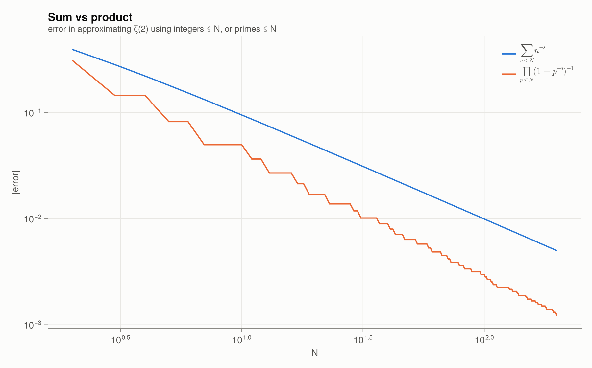

2 · Euler product & ζ at integers
The Euler product
For $\operatorname{Re} s > 1$,
\[\zeta(s) = \sum_{n=1}^\infty n^{-s} = \prod_{p} \left(1 - p^{-s}\right)^{-1}.\]
Why it holds: expand each factor as a geometric series $1 + p^{-s} + p^{-2s} + \cdots$ and multiply the series together. By unique factorisation, every $n^{-s}$ appears exactly once. The Euler product is the fundamental theorem of arithmetic written as an identity between functions.
It has three immediate consequences:
- $\zeta(s) \ne 0$ for $\operatorname{Re} s > 1$, because a convergent product of nonzero factors is nonzero.
- $\zeta(s) \to \infty$ as $s \to 1^+$, so there are infinitely many primes. In fact $\sum_p 1/p = \infty$ (Euler, 1737).
- $\log \zeta(s) = \sum_p \sum_k \frac{p^{-ks}}{k}$: zeta is a generating function for primes.
euler_product_partial(2, 1000), dirichlet_partial(2, 1000), zeta(2)(1.6447251902386706 + 0.0im, 1.6439345666815615, 1.6449340668482264)The two kinds of truncation converge at different rates. Summing over $n \le N$ leaves an error of about $1/N$, while multiplying over $p \le N$ leaves an error that drops only when $N$ passes a prime:
plot_euler_product()
ζ at even integers: the Basel problem
Euler showed in 1735 that $\zeta(2) = \pi^2/6$, and more generally that
\[\zeta(2n) = \frac{(-1)^{n+1} B_{2n} (2\pi)^{2n}}{2\,(2n)!},\]
where $B_k$ are the Bernoulli numbers ($\frac{t}{e^t-1} = \sum B_k \frac{t^k}{k!}$). zeta_even_exact returns the rational number $\zeta(2n)/\pi^{2n}$ exactly:
[n => zeta_even_exact(n) for n in 1:6]6-element Vector{Pair{Int64, Rational{BigInt}}}:
1 => 1//6
2 => 1//90
3 => 1//945
4 => 1//9450
5 => 1//93555
6 => 691//638512875Float64(zeta_even_exact(3)) * π^6, zeta(6)(1.017343061984449, 1.0173430619844488)[bernoulli(k) for k in 0:12]13-element Vector{Rational{BigInt}}:
1
-1//2
1//6
0
-1//30
0
1//42
0
-1//30
0
5//66
0
-691//2730No closed form is known for $\zeta(3), \zeta(5), \dots$. Apéry (1978) proved that $\zeta(3)$ is irrational. Ball–Rivoal (2001) showed that infinitely many $\zeta(2n+1)$ are irrational.
zeta(3) # Apéry's constant1.2020569031595938Related: the Dirichlet eta function
The alternating version
\[\eta(s) = \sum_{n\ge1} \frac{(-1)^{n-1}}{n^s} = \left(1 - 2^{1-s}\right)\zeta(s)\]
converges for $\operatorname{Re} s > 0$. This makes it the first tool for continuing $\zeta$ beyond $\operatorname{Re} s > 1$; see the next chapter.
dirichlet_eta(1), log(2)(0.6931471805599453 + 0.0im, 0.6931471805599453)Functions in this chapter
bernoulli, zeta_even_exact, dirichlet_partial, euler_product_partial, eta_partial, dirichlet_eta.